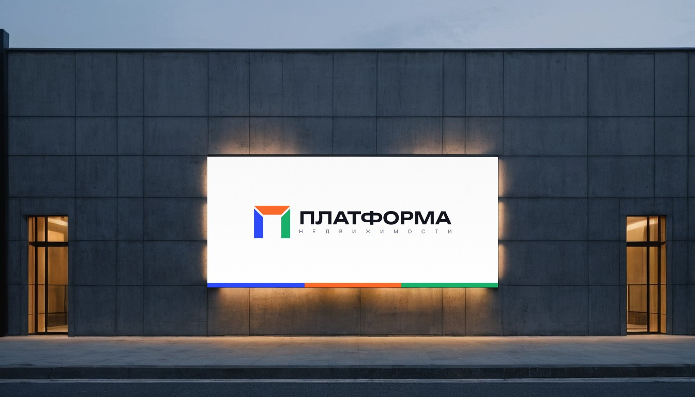
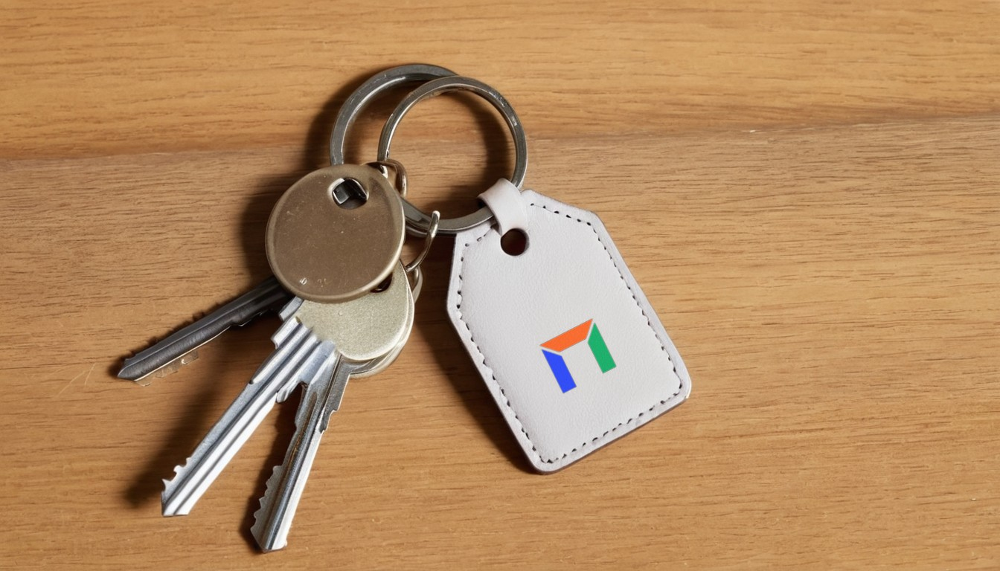
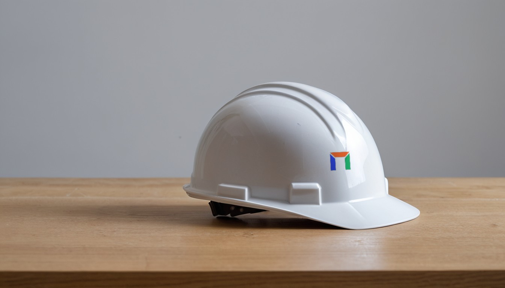
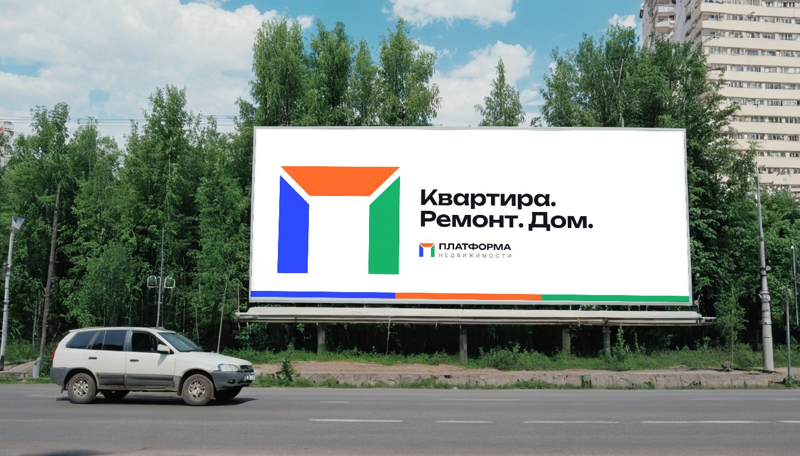
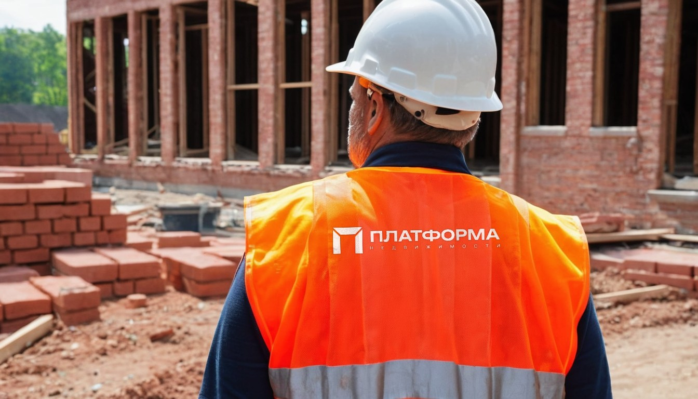
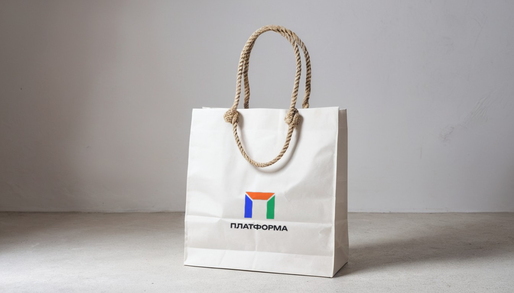

Яркий ·
«Сборка»
[ 05 · бренд в жизни ]

[ вывеска на фасаде офиса ]

[ брелок к ключам от новой квартиры ]

[ каска ]

[ билборд 6×3 ]

[ спецодежда ]

[ пакет для документов ]
[ как мы говорим ]
Бодро и понятно. Без «элитного», без восклицаний и звёздочек; цифры — только реальные.
Всё для дома — на одной платформе.
Квартира. Ремонт. Дом. В одном приложении.
Смета ремонта за 2 минуты.